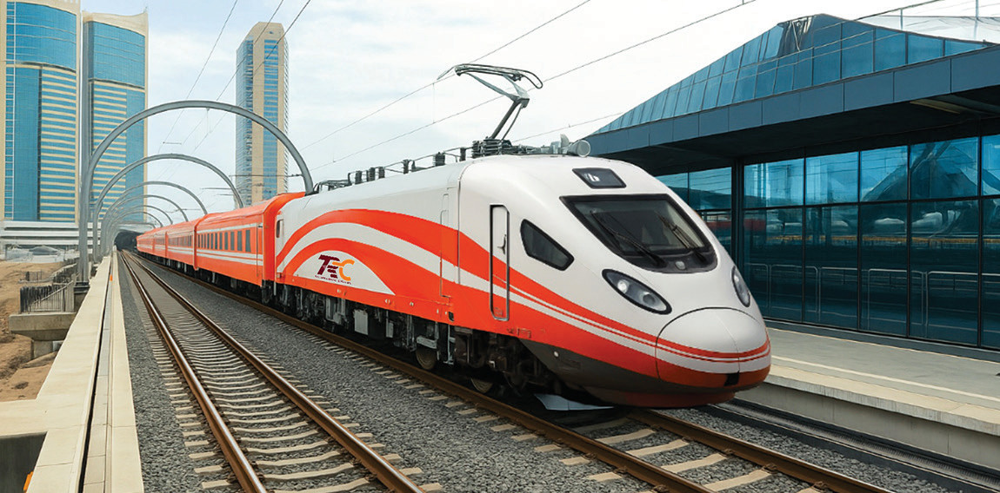

Uses of current electricity in daily life
Domestic use of current electricity
Electricity is essential for domestic tasks like cooking, preserving food, and doing laundry. It powers appliances such as stoves, refrigerators, washing machines, and irons. It also provides lighting, entertainment through TVs and computers, and comfort using fans, heaters, and air conditioners. Other common devices include kettles, vacuums, and hairdryers.
Transport use of current electricity
Current electricity is used in transportation to power various electric vehicles. For example, standard gauge railway trains use electricity for efficient and eco-friendly travel. Additionally, electric cars like the Tesla Model 3, electric buses in urban areas, trams in cities, and electric scooters also rely on current electricity for operation. Figure 2.64 shows a train which use electricity for transportation.

Industry use of current electricity
Industries use current electricity to power machines and equipment essential for manufacturing and production. For example, textile mills use electric looms, car factories operate robotic arms and conveyor belts, and food processing plants run mixers and packaging machines. Welding machines, and electric drills also rely on current electricity.
In groups, identify 3 other uses of current electricity apart from what is mentioned in this part.